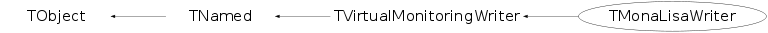

class TMonaLisaWriter: public TVirtualMonitoringWriter
TMonaLisaWriter Class defining interface to MonaLisa Monitoring Services in ROOT. The TMonaLisaWriter object is used to send monitoring information to a MonaLisa server using the ML ApMon package (libapmoncpp.so/UDP packets). The MonaLisa ApMon library for C++ can be downloaded at http://monalisa.cacr.caltech.edu/monalisa__Download__ApMon.html, current version: http://monalisa.cacr.caltech.edu/download/apmon/ApMon_c-2.2.0.tar.gz The ROOT implementation is primary optimized for process/job monitoring, although all other generic MonaLisa ApMon functionality can be exploited through the ApMon class directly via dynamic_cast<TMonaLisaWriter*>(gMonitoringWriter)->GetApMon(). Additions/modifications by Fabrizio Furano 10/04/2008 - The implementation of TFile throughput and info sending was just sending 'regular' samples about the activity of the single TFile instance that happened to trigger an activity in the right moment. - Now TMonaLisaWriter keeps internally track of every activity and regularly sends summaries valid for all the files which had activity in the last time interval. - Additionally, it's now finalized the infrastructure able to measure and keep track of the file Open latency. A packet is sent for each successful Open, sending the measures of the latencies for the various phases of the open. Currently exploited fully by TAlienFile and TXNetFile. Easy to report from other TFiles too. - Now, the hook for the Close() func triggers sending of a packet containing various information about the performance related to that file only. - Added support also for performance monitoring when writing
Function Members (Methods)
public:
| TMonaLisaWriter(const char* monserver, const char* montag, const char* monid = 0, const char* monsubid = 0, const char* option = "") | |
| virtual | ~TMonaLisaWriter() |
| void | TObject::AbstractMethod(const char* method) const |
| virtual void | TObject::AppendPad(Option_t* option = "") |
| virtual void | TObject::Browse(TBrowser* b) |
| static TClass* | Class() |
| virtual const char* | TObject::ClassName() const |
| virtual void | TNamed::Clear(Option_t* option = "") |
| virtual TObject* | TNamed::Clone(const char* newname = "") const |
| virtual Int_t | TNamed::Compare(const TObject* obj) const |
| virtual void | TNamed::Copy(TObject& named) const |
| virtual void | TObject::Delete(Option_t* option = "")MENU |
| virtual Int_t | TObject::DistancetoPrimitive(Int_t px, Int_t py) |
| virtual void | TObject::Draw(Option_t* option = "") |
| virtual void | TObject::DrawClass() constMENU |
| virtual TObject* | TObject::DrawClone(Option_t* option = "") constMENU |
| virtual void | TObject::Dump() constMENU |
| virtual void | TObject::Error(const char* method, const char* msgfmt) const |
| virtual void | TObject::Execute(const char* method, const char* params, Int_t* error = 0) |
| virtual void | TObject::Execute(TMethod* method, TObjArray* params, Int_t* error = 0) |
| virtual void | TObject::ExecuteEvent(Int_t event, Int_t px, Int_t py) |
| virtual void | TObject::Fatal(const char* method, const char* msgfmt) const |
| virtual void | TNamed::FillBuffer(char*& buffer) |
| virtual TObject* | TObject::FindObject(const char* name) const |
| virtual TObject* | TObject::FindObject(const TObject* obj) const |
| ApMon* | GetApMon() const |
| virtual Option_t* | TObject::GetDrawOption() const |
| static Long_t | TObject::GetDtorOnly() |
| virtual const char* | TObject::GetIconName() const |
| virtual const char* | TNamed::GetName() const |
| virtual char* | TObject::GetObjectInfo(Int_t px, Int_t py) const |
| static Bool_t | TObject::GetObjectStat() |
| virtual Option_t* | TObject::GetOption() const |
| virtual const char* | TNamed::GetTitle() const |
| virtual UInt_t | TObject::GetUniqueID() const |
| virtual Bool_t | TObject::HandleTimer(TTimer* timer) |
| virtual ULong_t | TNamed::Hash() const |
| virtual void | TObject::Info(const char* method, const char* msgfmt) const |
| virtual Bool_t | TObject::InheritsFrom(const char* classname) const |
| virtual Bool_t | TObject::InheritsFrom(const TClass* cl) const |
| virtual void | TObject::Inspect() constMENU |
| void | TObject::InvertBit(UInt_t f) |
| virtual TClass* | IsA() const |
| virtual Bool_t | TObject::IsEqual(const TObject* obj) const |
| virtual Bool_t | TObject::IsFolder() const |
| Bool_t | TObject::IsOnHeap() const |
| virtual Bool_t | TNamed::IsSortable() const |
| Bool_t | TObject::IsZombie() const |
| virtual void | TNamed::ls(Option_t* option = "") const |
| void | TObject::MayNotUse(const char* method) const |
| virtual Bool_t | TObject::Notify() |
| void | TObject::Obsolete(const char* method, const char* asOfVers, const char* removedFromVers) const |
| static void | TObject::operator delete(void* ptr) |
| static void | TObject::operator delete(void* ptr, void* vp) |
| static void | TObject::operator delete[](void* ptr) |
| static void | TObject::operator delete[](void* ptr, void* vp) |
| void* | TObject::operator new(size_t sz) |
| void* | TObject::operator new(size_t sz, void* vp) |
| void* | TObject::operator new[](size_t sz) |
| void* | TObject::operator new[](size_t sz, void* vp) |
| virtual void | TObject::Paint(Option_t* option = "") |
| virtual void | TObject::Pop() |
| virtual void | Print(Option_t* option = "") const |
| virtual Int_t | TObject::Read(const char* name) |
| virtual void | TObject::RecursiveRemove(TObject* obj) |
| void | TObject::ResetBit(UInt_t f) |
| virtual void | TObject::SaveAs(const char* filename = "", Option_t* option = "") constMENU |
| virtual void | TObject::SavePrimitive(ostream& out, Option_t* option = "") |
| virtual Bool_t | SendFileCloseEvent(TFile* file) |
| virtual Bool_t | SendFileOpenProgress(TFile* file, TList* openphases, const char* openphasename, Bool_t forcesend = kFALSE) |
| virtual Bool_t | SendFileReadProgress(TFile* file) |
| virtual Bool_t | SendFileWriteProgress(TFile* file) |
| virtual Bool_t | SendInfoDescription(const char* jobtag) |
| virtual Bool_t | SendInfoStatus(const char* status) |
| virtual Bool_t | SendInfoTime() |
| virtual Bool_t | SendInfoUser(const char* user = 0) |
| virtual Bool_t | SendParameters(TList* valuelist, const char* identifier = 0) |
| virtual Bool_t | SendProcessingProgress(Double_t nevent, Double_t nbytes, Bool_t force = kFALSE) |
| virtual Bool_t | SendProcessingStatus(const char* status, Bool_t restarttimer = kFALSE) |
| void | TObject::SetBit(UInt_t f) |
| void | TObject::SetBit(UInt_t f, Bool_t set) |
| virtual void | TObject::SetDrawOption(Option_t* option = "")MENU |
| static void | TObject::SetDtorOnly(void* obj) |
| virtual void | SetLogLevel(const char* loglevel = "WARNING") |
| virtual void | TNamed::SetName(const char* name)MENU |
| virtual void | TNamed::SetNameTitle(const char* name, const char* title) |
| static void | TObject::SetObjectStat(Bool_t stat) |
| virtual void | TNamed::SetTitle(const char* title = "")MENU |
| virtual void | TObject::SetUniqueID(UInt_t uid) |
| virtual void | ShowMembers(TMemberInspector& insp) |
| virtual Int_t | TNamed::Sizeof() const |
| virtual void | Streamer(TBuffer& b) |
| void | StreamerNVirtual(TBuffer& b) |
| virtual void | TObject::SysError(const char* method, const char* msgfmt) const |
| Bool_t | TObject::TestBit(UInt_t f) const |
| Int_t | TObject::TestBits(UInt_t f) const |
| virtual void | TObject::UseCurrentStyle() |
| virtual void | Verbose(Bool_t onoff) |
| virtual void | TObject::Warning(const char* method, const char* msgfmt) const |
| virtual Int_t | TObject::Write(const char* name = 0, Int_t option = 0, Int_t bufsize = 0) |
| virtual Int_t | TObject::Write(const char* name = 0, Int_t option = 0, Int_t bufsize = 0) const |
protected:
| virtual void | TObject::DoError(int level, const char* location, const char* fmt, va_list va) const |
| void | TObject::MakeZombie() |
private:
| TMonaLisaWriter(const TMonaLisaWriter&) | |
| void | Init(const char* monserver, const char* montag, const char* monid, const char* monsubid, const char* option) |
| TMonaLisaWriter& | operator=(const TMonaLisaWriter&) |
| Bool_t | SendFileCheckpoint(TFile* file) |
Data Members
public:
| enum TObject::EStatusBits { | kCanDelete | |
| kMustCleanup | ||
| kObjInCanvas | ||
| kIsReferenced | ||
| kHasUUID | ||
| kCannotPick | ||
| kNoContextMenu | ||
| kInvalidObject | ||
| }; | ||
| enum TObject::[unnamed] { | kIsOnHeap | |
| kNotDeleted | ||
| kZombie | ||
| kBitMask | ||
| kSingleKey | ||
| kOverwrite | ||
| kWriteDelete | ||
| }; |
protected:
| TString | TNamed::fName | object identifier |
| TString | TNamed::fTitle | object title |
| TList* | TVirtualMonitoringWriter::fTmpOpenPhases | To store open phases when there is not yet an object |
private:
| ApMon* | fApmon | ! connection to MonaLisa |
| TStopwatch | fFileStopwatch | time measurements for data access throughputs |
| TString | fHostname | ! hostname of MonaLisa server |
| Bool_t | fInitialized | true if initialized |
| TString | fJobId | ! job id |
| Double_t | fLastFCloseSendTime | In order not to flood ML servers |
| time_t | fLastProgressTime | timestamp of the last send command for player process |
| Double_t | fLastRWSendTime | timestamp of the last send command for file reads/writes |
| map<UInt_t,MonitoredTFileInfo*>* | fMonInfoRepo | ! repo to gather per-file-instance mon info; |
| Int_t | fPid | ! process id |
| Int_t | fReportInterval | interval after which to send the latest value |
| TStopwatch | fStopwatch | cpu and time measurement for job and proc status |
| TString | fSubJobId | ! sub job id |
| Bool_t | fVerbose | verbocity |
Class Charts
{kind=link}
{kind=link}
{kind=link}
{kind=link}

Function documentation
TMonaLisaWriter(const char* monserver, const char* montag, const char* monid = 0, const char* monsubid = 0, const char* option = "")
Create MonaLisa write object.
void Init(const char* monserver, const char* montag, const char* monid, const char* monsubid, const char* option)
Creates a TMonaLisaWriter object to send monitoring information to a MonaLisa server using the MonaLisa ApMon package (libapmoncpp.so/UDP packets). The MonaLisa ApMon library for C++ can be downloaded at http://monalisa.cacr.caltech.edu/monalisa__Download__ApMon.html, current version: http://monalisa.cacr.caltech.edu/download/apmon/ApMon_cpp-2.0.6.tar.gz The ROOT implementation is primary optimized for process/job monitoring, although all other generic MonaLisa ApMon functionality can be exploited through the ApMon class directly (gMonitoringWriter->GetApMon()). Monitoring information in MonaLisa is structured in the following tree structure: <farmname> | ---> <nodename1> | ---> <key1> - <value1> ---> <key2> - <value2> ---> <nodename2> | ---> <key3> - <value3> ---> <key4> - <value4> The parameter monid is equivalent to the MonaLisa node name, for the case of process monitoring it can be just an identifier to classify the type of jobs e.g. "PROOF_PROCESSING". If monid is not specified, TMonaLisaWriter tries to set it in this order from environement variables: - PROOF_JOB_ID - GRID_JOB_ID - LCG_JOB_ID - ALIEN_MASTERJOB_ID - ALIEN_PROC_ID The parameter montag is equivalent to the MonaLisa farm name, for the case of process monitoring it can be a process identifier e.g. a PROOF session ID. The parameter monserver specifies the server to whom to send the monitoring UDP packets. If not specified, the hostname (the port is a default one) is specified in the environment variable APMON_CONFIG. To use TMonaLisaWriter, libMonaLisa.so has to be loaded. According to the fact, that the deepness of the MonaLisa naming scheme is only 3 (<farm><node><value>), a special naming scheme is used for process monitoring. There is a high-level method to send progress information of Tree analysis (# of events, datasize). To distinguish individual nodes running the processing, part of the information is kept in the <value> parameter of ML. <value> is named as: <site-name>:<host-name>:<pid>:<valuetag> <site-name> is taken from an environment variable in the following order: - PROOF_SITE - GRID_SITE - ALIEN_SITE - default 'none' <host-name> is taken from gSystem->Hostname() <pid> is the process ID of the ROOT process Example of use for Process Monitoring: new TMonaLisaWriter("BATCH_ANALYSIS","AnalysisLoop-00001","lxplus050.cern.ch"); Once when you create an analysis task, execute gMonitoringWriter->SendInfoUser("myname"); gMonitoringWriter->SendInfoDescription("My first Higgs analysis"); gMonitoringWriter->SendInfoTime(); gMonitoringWriter->SendInfoStatus("Submitted"); On each node executing a subtask, you can set the status of this subtask: gMonitoringWriter->SendProcessingStatus("Started"); During the processing of your analysis you can send progress updates: gMonitoringWriter->SendProcessProgress(100,1000000); <= 100 events, 1MB processed gMonitoringWriter-SendProcessingStatus("Finished"); delete gMonitoringWriter; gMonitoringWriter=0; Example of use for any Generic Monitoring information: TList *valuelist = new TList(); valuelist->SetOwner(kTRUE); // append a text object TMonaLisaText *valtext = new TMonaLisaText("decaychannel","K->eeg"); valuelist->Add(valtext); // append a double value TMonaLisaValue* valdouble = new TMonaLisaValue("n-gamma",5); valuelist->Add(valdouble); Bool_t success = SendParameters(valuelist); delete valuelist; option: "global": gMonitoringWriter is initialized with this instance
Bool_t SendInfoStatus(const char* status)
Sends a <status> text to MonaLisa following the process scheme:
<site> --> <jobid> --> 'status' = <status>
Used to set a global status for a groupjob, e.g.
a master-job or the general status of PROOF processing.
Bool_t SendInfoUser(const char* user = 0)
Sends the <user> text to MonaLisa following the process scheme:
<site> --> <jobid> --> 'user' = <user>
Bool_t SendInfoDescription(const char* jobtag)
Sends the description <jobtag> following the processing scheme:
<site> --> <jobid> --> 'jobname' = <jobtag>
Bool_t SendInfoTime()
Sends the current time to MonaLisa following the processing scheme
<site> --> <jobid> --> 'time' = >unixtimestamp<
Bool_t SendProcessingStatus(const char* status, Bool_t restarttimer = kFALSE)
Send the procesing status 'status' to MonaLisa following the
processing scheme:
<site> --> <jobid> --> 'status' = <status>
Used, to set the processing status of individual subtaks e.g. the
status of a batch (sub-)job or the status of a PROOF slave
participating in query <jobid>
Bool_t SendProcessingProgress(Double_t nevent, Double_t nbytes, Bool_t force = kFALSE)
Send the procesing progress to MonaLisa.
Bool_t SendFileOpenProgress(TFile* file, TList* openphases, const char* openphasename, Bool_t forcesend = kFALSE)
Send the fileopen progress to MonaLisa. If openphases=0 it means that the information is to be stored in a temp space, since there is not yet an object where to attach it to. This is typical in the static Open calls. The temp openphases are put into a list as soon as one is specified. If thisopenphasename=0 it means that the stored phases (temp and object) have to be cleared.
Bool_t SendFileCloseEvent(TFile* file)
Bool_t SendFileReadProgress(TFile* file)
Bool_t SendFileWriteProgress(TFile* file)
Bool_t SendFileCheckpoint(TFile* file)
Bool_t SendParameters(TList* valuelist, const char* identifier = 0)
Send the parameters to MonaLisa.
TMonaLisaValue& operator=(const TMonaLisaWriter& )
TMonaLisaWriter(const TMonaLisaWriter& )